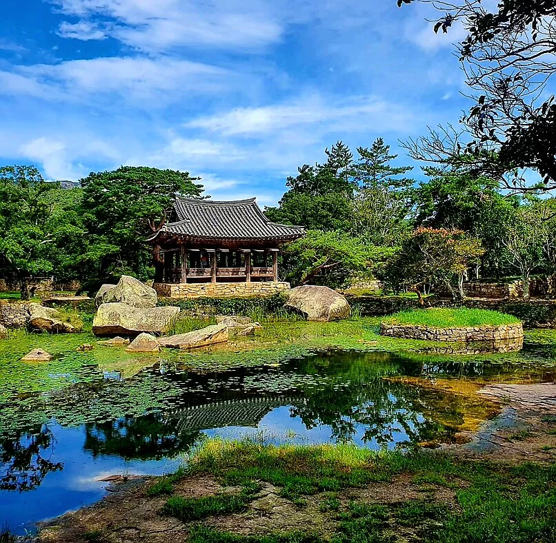

Since 1671
세연정 옆에서
고산 윤선도는 제주로 가던 중 태풍을 만나 잠시 보길도에 닿아 아름다운 풍경에 빠져 보길도에 살았습니다. 고산 윤선도가 지은 한국의 3대 정원 세연정은 지금도 보길도에 남아 있습니다. 1671년은 고산이 보길도에서 생을 마친 해입니다. 보길도가는 그 해를 이어받아 그의 철학과 정신을 기념하며, 세연정 옆에서 막걸리를 빚습니다.
서울에서 문화 콘텐츠 일을 하다, 고향 보길도로 돌아왔습니다.
세연정 옆에서 우리 섬의 시간을 막걸리 한 잔에 담고 싶었습니다.보길씨 · 중앙일보 인터뷰 중에서

세연정 洗然亭